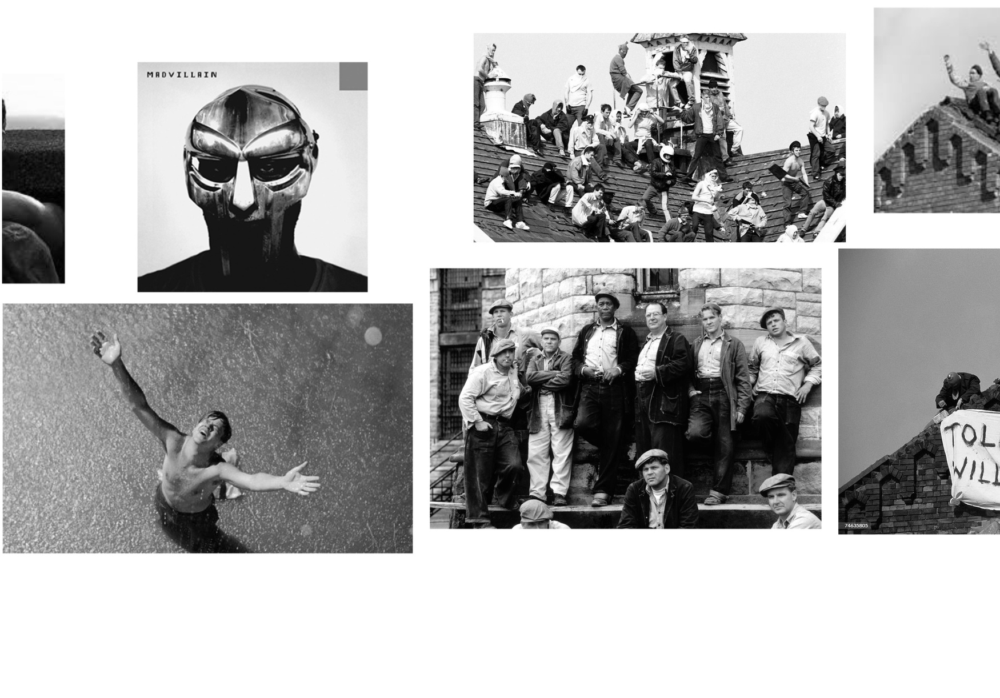
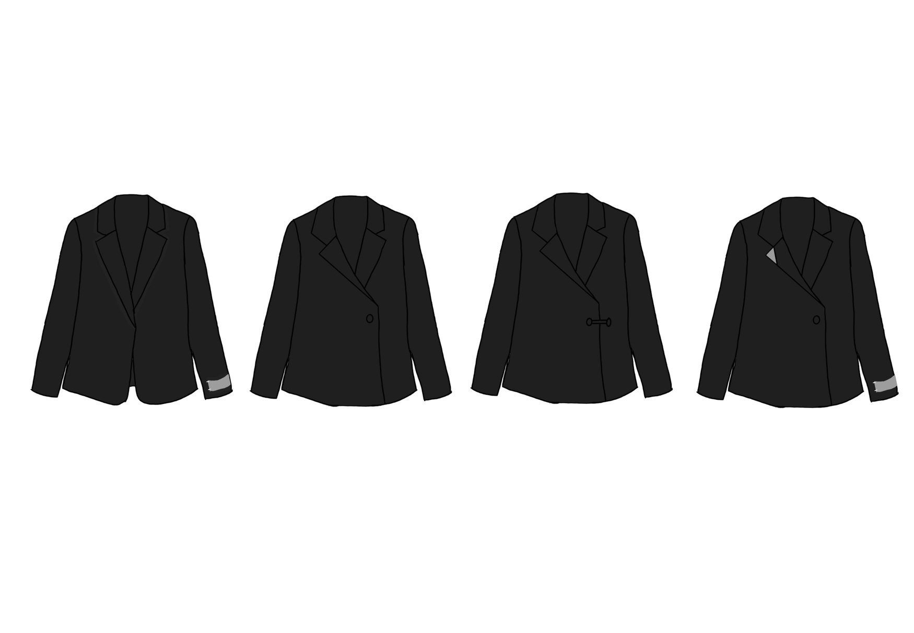
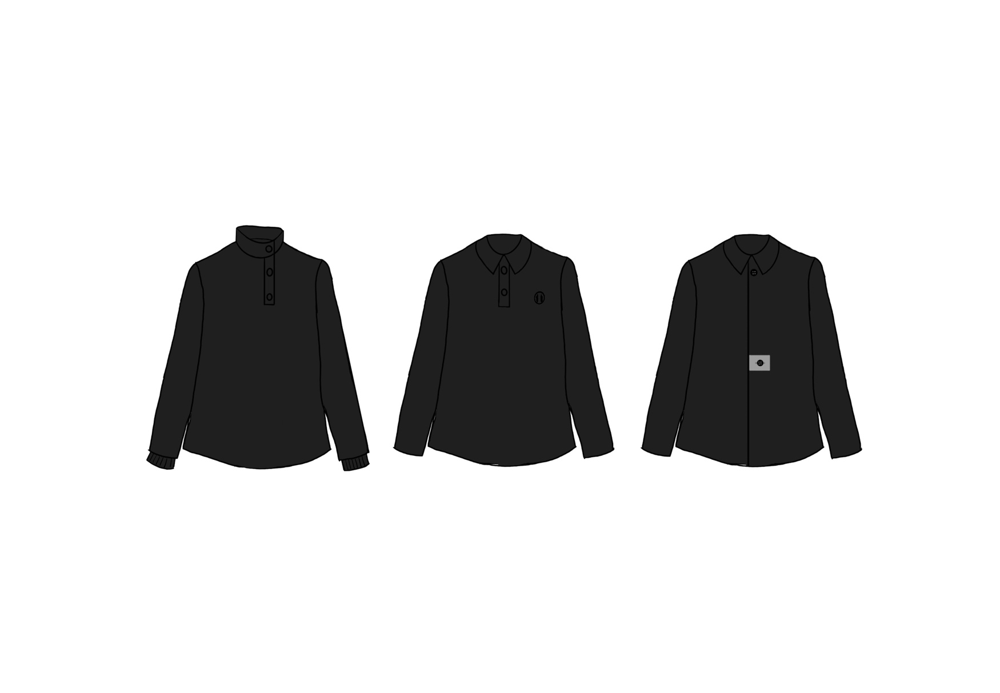
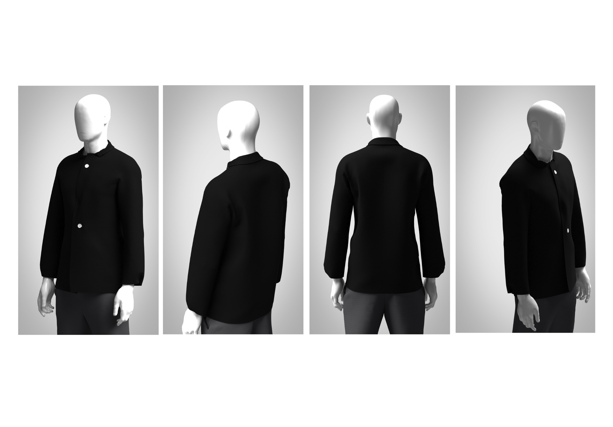
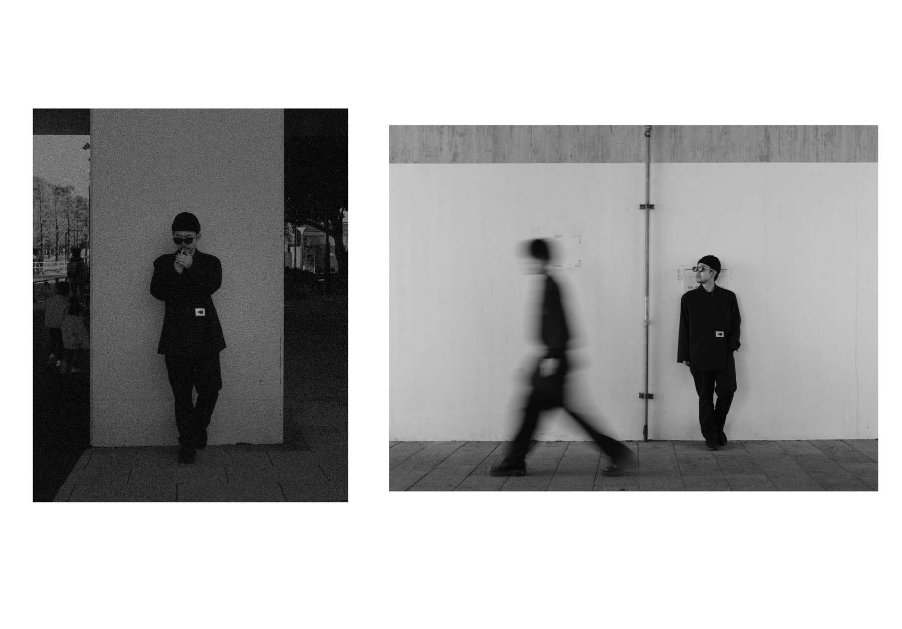

Design Concept

Both groups, guards and prisoners, were people trying to survive inside a system that provided neither of them enough resources to do so with dignity. MF DOOM captured this in Strange Ways: "Paid to interfere with how a brother get his money. Now, who's the real thugs, killers and gangsters?" The guard and the prisoner are versions of the same person.
The starting point was a garment that both a person with power and a person without it would wear. A blazer leaned too far toward authority. A t-shirt leaned too far toward casualness, too easy, too commercial, a message lost in noise the way graffiti on a wall becomes invisible through repetition. A jacket sits in the middle. It carries weight without declaring a side.
The reference came from looking at what prisoners in Strangeways actually wore, a collared shirt. The collar appears in prison uniforms and in boardrooms. This jacket builds outward from that shared detail. The system does not sort people by what they wear. It sorts them by what they own and who they know.
Sketches

The first design is based on a classic blazer silhouette. It references a photograph taken during the Strangeways Prison Riot, showing a man standing on the roof wearing a lapel jacket.
To maintain wearability and familiarity, the overall structure of the blazer remains unchanged. Instead, the design focuses on subtle modifications through details such as buttons, closures, tags, and accompanying accessories.
A metallic element is introduced to contrast the all black garment. This not only adds visual emphasis but also reinforces the conceptual themes of strength, control, and structure present throughout the project.

The second design is based on a collared jacket, referencing the shirts worn by prisoners during the Strangeways Prison Riot. At the same time, the collared form is commonly associated with professionalism and authority, creating a crossover between opposing social positions.
By selecting a garment that exists in both contexts, the design highlights the shared visual language between prisoners and figures of power. It suggests that while status, income, and authority may differ, the individuals themselves are not fundamentally different.
A black color palette is used to neutralize associations with either group. Metallic elements are introduced to accent the surface, reinforcing themes of structure, control, and power within the design.
CAD Render

Final

Black was chosen because it belongs to no one group. Orange reads as prisoner. A bright colour reads as wealth. Black is worn across every economic standing, every social position, every side of the system. Wool was chosen for the same reason, a common universal fabric with no luxury connotation. Nothing about the garment declares where you stand. That is the point.
The only metal element is a plate at the buttonhole, a small detail that carries the same argument as every object in this collection. Metal has no malice. It does not choose its use. The same material that reinforces a door to keep people safe reinforces a cell to keep people in. Who decides which it becomes is the question the entire collection is asking.
A coat would have been seasonal. These injustices are not seasonal. The jacket can be worn year-round, a quiet reminder that the system does not take breaks, does not pause for summer, does not wait for the right conditions to maintain itself.
